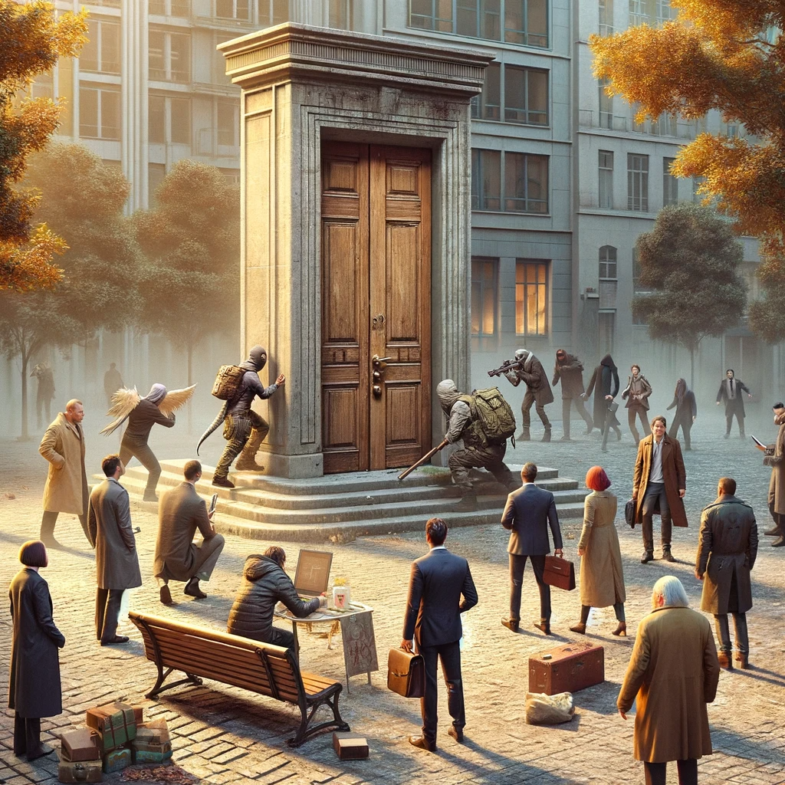
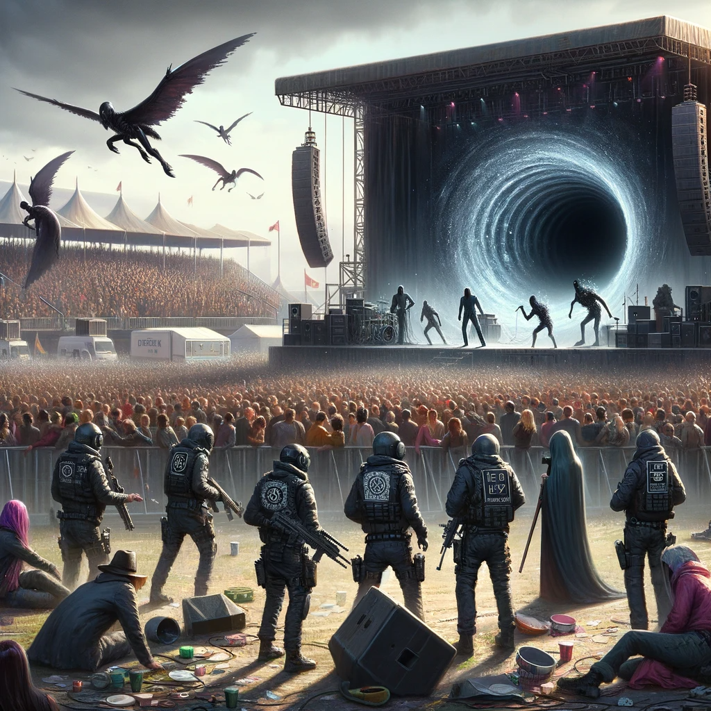
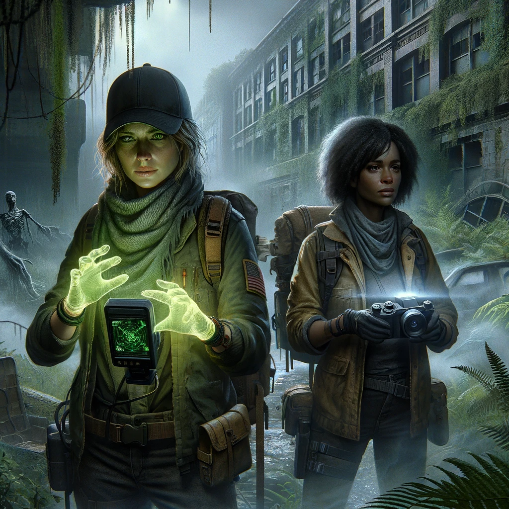
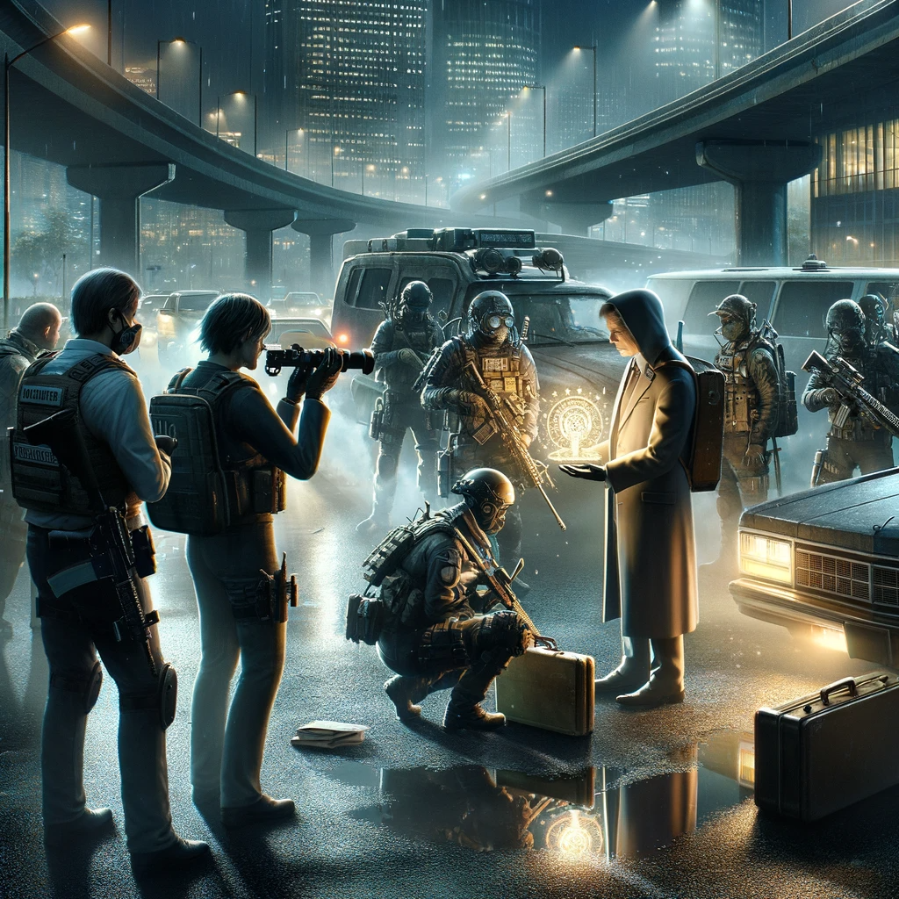

Other Side
Table of Contents
1. Other Side
1.1. Universe




- Science + witchcraft.
- Parallel dimension appears in response to mass/strong emotions.
- Dimension and things from it change people physically and mentally.
- Folclore is an early manifestations of the dimension.
1.2. Setting
1.2.1. Meta
Urban Legends with low-grade superheroes.
1.2.2. Time
Our time.
1.2.3. References
- TODO Нужны ли бюджеты/оценки для основных референсов?
- Primary
- X-Files video_series
Without aliens.
- Marvel's Netflix television series video_series comics
Low-grade superheroes: Jessica Jones, Daredevil, Iron Fist, The Defenders, The Punisher, Luke Cage
- Gotham TV series video_series
- Otherside Picnic manga animation_series
- Fringe video_series
- Misfits video_series
- S.H.I.E.L.D. video_series comics
- X-Men comics movie video_series animated_series
But low-grade heroes.
- Made in Abyss animation_series manga video_game movie
- [RESEARCH] John Constantine movie comics
- [RESEARCH] Stranger Things video_series
- [RESEARCH] Control game
Like SCP Foundation.
- [RESEARCH] Ghost in the Shell animation_series movie manga
- [RESEARCH] Deus Ex video_game
- X-Files video_series
- Secondary
- SCP Foundation game
- Wellington Paranormal video_series
- American Gods book video_series
- Warhouse 13 video_series video_series
- Mononoke don't confuse with "Princess Mononoke" animation_series
- Mieruko Chan manga animation_series
- Miss Peregrine's Home for Peculiar Children movie
- Torchwood video_series
- First Wave video_series
- Dirk Gently's Holistic Detective Agency video_series
- The Blacklist video_series
- Ночной дозор book movies
- Пикник на обочине book
- Metro 2033-x video_game book
- S.T.A.L.K.E.R. video_game
- Utopia video_series
- [RESEARCH] Carnival Row video_series
- [RESEARCH] Spriggan animation_series managa movie video_game
- [RESEARCH] Heroes video_series
- [RESEARCH] The OA video_series
- [RESEARCH] The Lost Room video_series
- [RESEARCH] Gateway book
- [RESEARCH] The Craft movie
- [RESEARCH] The Boys video_series
- [RESEARCH] John Wick movie
- [RESEARCH] The Dresden Files video_series book
- [RESEARCH] Kolchak: The Night Stalker video_series
Tremendous influence on X-Files.
- [RESEARCH] Twin Peaks video_series
- [RESEARCH] Hellraiser movie comics
- SCP Foundation game
- Other references on a separate page.
1.2.4. Heroes
- Primary
- Adventurer/freelancer
- Investigator (journalist, detective, special agent)
- Low-grade hero/villain
- Folclore creature (vampire, werewolf, zombie, ghost)
- Representative of power (boss at work, agent of government/secret organization/corporation)
- Scientist/engineer/mechanic specialized in paranormal
- Illegal trader (artifacts, information, weapons, drugs)
- Rich gray-moral entrepreneur (Walter White, Tony Stark, Frank Underwood, Raymond Reddington)
- Adventurer/freelancer
- Secondary
- Corrupted worker (politician, policeman, judge, priest)
- Doctor/paramedic
- Permanently injured person (mentally or physically): PTSD, amnesia.
- Person with two lives / alter ego
- Familiar/pet from the other side
- Mindless mutant
- Con artist
- Weirdness magnet
- Dangerous prisoner
- Powerful being with alogical goals
- Incidental companion
- Corrupted worker (politician, policeman, judge, priest)
1.2.5. Stories
- Primary
- Secondary
- Life of a "Pirate Ship"
Days of the FBI, newspaper editorial office, detective agency.
- Damsel in distress
- Con
- Adapting to paranormal
- Changing of person's moral / corruption
- Segregation
- Quest for unlimited powers
- Long tail of the past
Consequences of the past actions/mistakes.
- The good of a society vs the good of an individual
- Life of a "Pirate Ship"